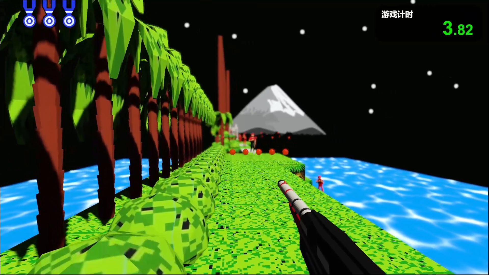
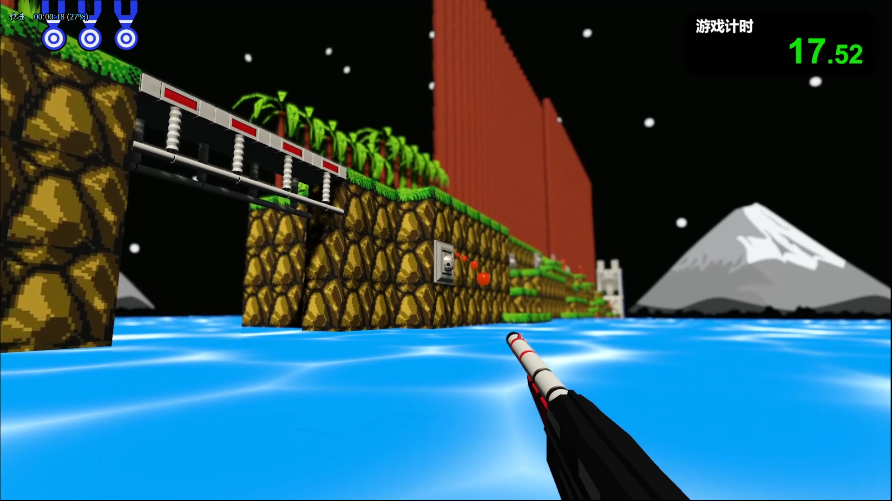
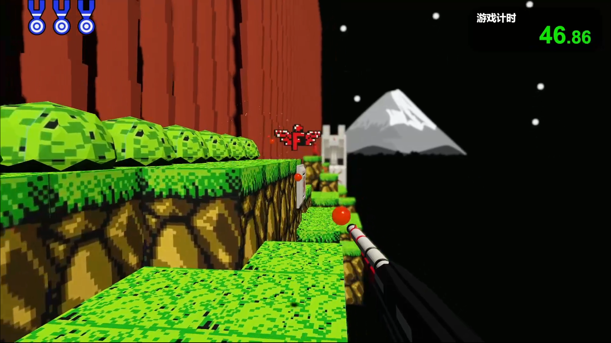
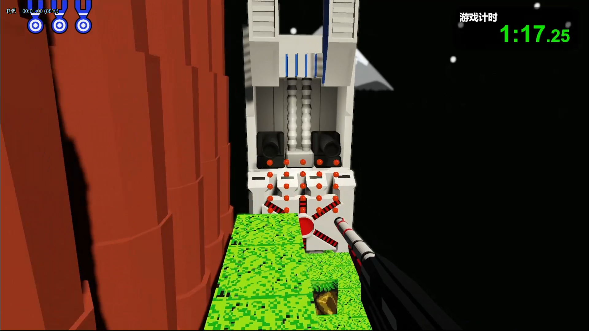

Contra 3D
Available on itch.io
This game is a 3D version of the famous game Contra. I've modeled and coded the whole game, and altered the game mechanics to fit 3D more.
Another influencer from bilibili came to me and wanted to do a colab video where he wanted me to make a 3D version of Contra and he would play it. So I went about and
made a literal first person version of Contra. It was a bit of a hassle to try to make the tone feel right in 3D. And I reimagined how the map would look like in 3D.
I've added different bullets and enemies into the game, just like how the original Contra was.



